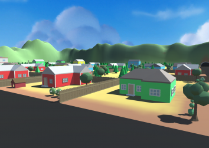
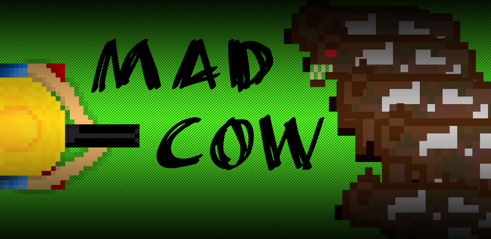
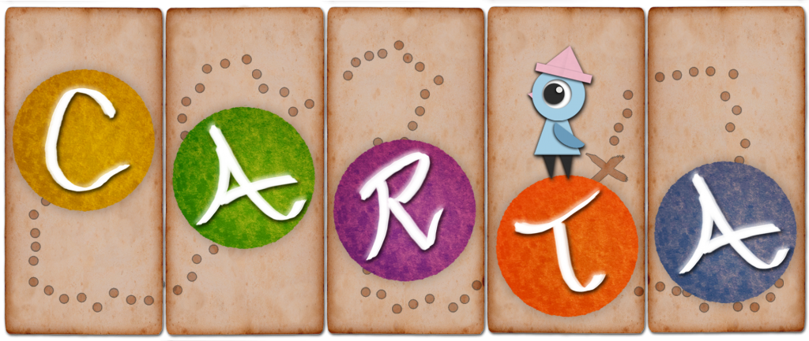
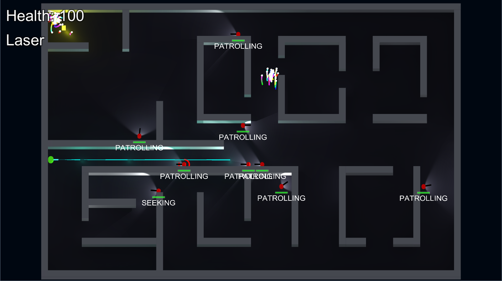
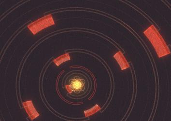

ABOUT ME
I am currently studying a Bachelor of Computer Science (Majoring in Games Development) at Swinburne University. I have combined my passion for programming and video games to focus on games development. I spend a lot of my spare time making games, experimenting with new ideas and programming small tools to make tasks easier. Other activites I enjoy are hockey, running and mountain bike riding.
Here are some of the projects that I have made over the course of my degree, at game jams or in my spare time.
Post Haste

Pickup packages from the depot in your flying van and deliver them to the correct houses. Make as many deliveries as you can before time runs out!
I developed Post Haste with a small team during Global Game Jam 2016. It was my first experience of working in a team and despite the fact that the game itself is not much fun, I am proud of what we managed to create in a 48 hour period.
View Global Game Jam Page
Mad Cow

Mad cow disease has broken out in a small farm. Play as either a farmer trying to put down the affected cows before they infect the herd; or as a mad cow, fighting for its life.
My first mobile game. Made with Unity and published to the Google Play Store. I am really happy with how it turned out despite the low attention that it received.
View Google Play Store Page
Carta

Carta is a puzzle platformer where the player must manipulate the paper world in order to help Carta reclaim their lost map pieces and return home.
Carta was my final-year university Capstone project. I worked alongside a team of 2 programmers and 5 designers to create this cute little platformer. Despite being a programmer, I actually did a lot of design work to as I experimented with a lot of different gameplay mechanics. It was a great experience working in larger team and at the end of the year we exhibited our game at PAX Australia. We were also lucky enough to the winners of the GCAP Student Showcase for 2017.
Visit dedicated game website
Untitled Tower Defence Game
Build towers to eliminate waves of enemy units before they reach your end zone and take all of your lives.
This is the first proper PC game I made. I created all of the 3D models myself, learning how to use Blender through online tutorials. This was quite difficult as I am no artist and I struggled to create complex models. Despite all of this, I had a lot of fun making the game and enjoy playing it too.
View on GitHub
Domino Dash
Line up dominoes as they head off the screen. Place as many as you can before they get away from you!
A small and very simple mobile game that I created and released in a small amount of time. It was challenge to ensure there is always a valid move available, when the player places a domino out of order, due to there being 2 with the same number on top, but I managed to figure it out.
View Google Play Store Page
Untitled Top-Down Stealth Shooter

Evade the guards and security bots. Grab the intel without getting caught.
A proof-of-concept game for a unit titled 'AI for Games'. This project demonstrates pathfinding, finite state machines, behaviour trees, swarm/flocking behaviour and goal oriented action behaviour.
View on GitHub
packetLoss

Waves of swarming data packets must be routed to the centre, ensuring everyone’s data is delivered in a timely manner. Lose too many packets and it's game over.
packetLoss was created at Global Game Jam 2017. I jammed with some workmates who had never worked on a game before so it was a lot of fun and they learnt a lot. We couldn't decide on any solid mechanics for the game so it is quite simple but we had some good artists so I think the visuals are quite impressive.
View Global Game Jam Page